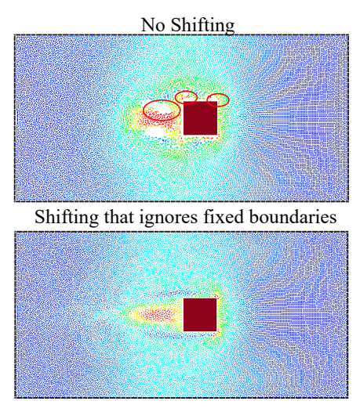
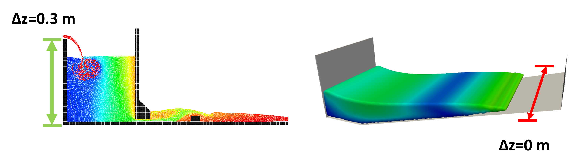

Main Solver Parameters¶
Under review by José Domínguez and Alex Crespo
Main solver parameters¶
execution/parameters defines the principal numerical and saving options. It does not generate the particles. Use the current textual identifiers for the options that now provide them; shifting retains numerical mode values. The tables below group the distributed reference definitions by purpose.
A documented default, an illustrative template value and a migration choice are different things. For example, the template illustrates NoPenetration=Y although its documented default is N, and SaveExtraParts=0-100:10 although its documented default is 0. TimeMax and TimeOut require case-specific values. The current reference and reader use DensityDT=FO when omitted, whereas preserving an older configuration may require explicitly writing NO. Always specify the intended formulation rather than relying on an omitted option during migration.
Saving and numerical precision¶
| Parameter | Current definition and documented alternatives | Reference example |
|---|---|---|
SavePosDouble |
Saves particle position using double precision: Y/N (default=N) | N |
SaveExtraParts |
Part interval or list for saving extra data for restart option (default=0) | 0-100:10 |
Position computations use double precision internally. SavePosDouble controls the precision of saved positions. The source precision example has an 18 m domain, water depth 0.18 m and dp=0.012374 m, illustrating why coordinate magnitude relative to spacing matters. Saving in double precision does not independently select a different position-update algorithm.
SaveExtraParts selects extra data for restarting at particular PART numbers or intervals. Its list syntax is distinct from the physical saving interval TimeOut.
As implementation background, the presentation distinguishes CPU double-precision positions from the GPU's auxiliary cell-relative position array. The comparison concerns large coordinate magnitudes relative to particle spacing. It does not turn SavePosDouble into a switch for the internal arithmetic or establish that a particular accelerator build uses every source implementation detail unchanged.
Boundary treatment¶
| Parameter | Current definition and documented alternatives | Reference example |
|---|---|---|
Boundary |
Boundary method: DBC, mDBC, MIX:MixBC (default=DBC) | DBC |
SlipMode |
Slip mode for mDBC: NS:No-slip, FS:Free slip, V0:TanVel=0, M22:mDBC 2022 (default=NS) | NS |
NoPenetration |
Activate No-Penetration option for mDBC: Y/N (default=N) | Y |
DBC, mDBC and MIX are different boundary choices. mDBC reconstructs boundary density/pressure using normals and ghost-node information, with separate slip and optional no-penetration treatment. NS means no-slip, FS free-slip, V0 zero tangential velocity and M22 the older mDBC mode. No-penetration is an additional correction; do not infer that changing a slip name activates it.
Boundary particle layers and smoothing length must provide adequate support. The general presentation describes at least three layers depending on h; use the detailed mDBC guide to configure normal generation, orientation, layer spacing and the selected mode. MIX requires its own per-marker configuration. Merely changing Boundary does not generate normal vectors or assign all mixed conditions.
The source motivates mDBC by reconstructing boundary density and pressure and reducing the unphysical separation that can occur between boundary and fluid particles. That intended improvement is conditional on correctly prepared boundaries and adequate support; it is not a universal accuracy guarantee for an arbitrary geometry. The mDBC explanation of normals and layers gives the corresponding construction and restrictions.
Time integration and kernel¶
| Parameter | Current definition and documented alternatives | Reference example |
|---|---|---|
StepAlgorithm |
Step Algorithm: SYM:Symplectic, VER:Verlet (default=SYM) | SYM |
VerletSteps |
Verlet only: Number of steps to apply Euler timestepping (default=40) | 40 |
Kernel |
Interaction Kernel: WC2:WendlandC2, WC6:WendlandC6 (default=WC2) | WC2 |
The presentation contrasts Verlet and Symplectic integration. Current default SYM is not the old illustration's default=1 comment. Preserve an explicitly selected Verlet configuration as VER when it is still appropriate. VerletSteps=40 is the interval for the Euler-type correction described by the source, not a request to take only 40 time steps.
Current kernel identifiers are WC2 and WC6. WC6 requires a build that includes it. The older presentation's Cubic Spline option is historical background, not a current Kernel value. Moving from that kernel to WC2 is a numerical-method change, even if a documented migration policy prescribes it.
Viscosity and turbulence¶
| Parameter | Current definition and documented alternatives | Reference example |
|---|---|---|
ViscoTreatment |
Viscosity formulation: LAM:Laminar, ART:Artificial (default=LAM) | LAM |
Visco |
Viscosity value. Typically 0.01 for Artificial and 1e-6 m^2/s (water kinematic viscosity) for Laminar | 1e-6 |
ViscoBoundFactor |
Multiply viscosity value with boundary (default=1) | 1 |
Turbulence |
Turbulence model: NO:None, SPS:Sub-particle scale (default=NO) | NO |
ART uses the artificial-viscosity coefficient; LAM uses kinematic viscosity in m²/s. A number appropriate to ART is not automatically a kinematic viscosity. Preserve the intended formulation and coefficient together. The source gives α=0.01 as a wave-tank example and larger values for some dam-break cases depending on dp; these are not universal calibration rules. Its ART screenshots additionally use 0.02; these are separate teaching examples. Its LAM example uses 10⁻⁶ m²/s for water.
Turbulence=SPS requires ViscoTreatment=LAM in the core fluid reader; the ART/SPS combination is rejected. To retain the old combined Laminar+SPS option, select both LAM and SPS. This mapping must not be applied to specialised non-Newtonian constitutive selectors.
The boundary factor relates fluid–boundary and fluid–fluid artificial viscosity in the source as follows:
Density diffusion and divergence cleaning¶
| Parameter | Current definition and documented alternatives | Reference example |
|---|---|---|
DensityDT |
Density Diffusion Term: NO:None, FO:Fourtakas (default=FO) | FO |
DensityDTvalue |
DDT value (default=0.1) | 0.1 |
DivCleanKp |
Kappa parameter for Divergence Cleaning (equal to coefsound) (default=0) | 0 |
Density diffusion reduces density noise by adding a diffusive contribution to the continuity equation. The current core options are NO and FO. The historical presentation distinguishes Molteni diffusion, Fourtakas away from boundaries and the full Fourtakas application. The first two historical formulations are not available as current selectable equivalents. Replacing either with NO disables that contribution; it does not reproduce the original diffusion.
The reader default FO applies when DensityDT is omitted. An explicit NO used during migration is a separate choice to keep density diffusion disabled; it does not redefine that default. The default=NO comment retained in the representative case below reflects its migration convention, not the reader default.
FO uses the hydrostatic-aware formulation discussed by the source, which calculates hydrostatic pressure locally and depends on gravity. Its treatment near severely truncated boundary support is one of the reasons for distinguishing it from the older interior-only application. The coefficient DensityDTvalue is separate from selecting the method.
Divergence cleaning uses an additional transported field and a dissipative momentum contribution. Zero DivCleanKp disables it; a positive value enables it. The source and parameter reference relate κ to coefsound. The inspected solver rejects divergence cleaning with VER and with Multi-GPU execution; do not infer compatibility merely from the existence of the parameter.
Particle shifting¶
| Parameter | Current definition and documented alternatives | Reference example |
|---|---|---|
Shifting |
Shifting mode 0:None, 1:Ignore bound, 2:Ignore fixed, 3:Full, 4:Full advanced (default=0) | 0 |
ShiftCoef |
Coefficient for standard shifting computation (default=-2) | -2 |
ShiftTFS |
Threshold to detect free surface. Typically 1.5 for 2D and 2.75 for 3D (default=0) | 0 |
ShiftAdvCoef |
Coefficient for advanced shifting computation (default=-0.01) | -0.01 |
ShiftAdvALE |
ALE formulation for advanced shifting: Y/N (default=N) | N |
ShiftAdvNCPress |
Non conservative pressure formulation for advanced shifting: Y/N (default=N) | N |
Modes 1–3 are standard shifting with different boundary exclusions; mode 4 selects Advanced Shifting. ShiftCoef and ShiftTFS apply to standard shifting. The typical free-surface thresholds 1.5 in 2D and 2.75 in 3D are not the default zero and must not be inserted automatically.
ShiftAdvCoef, ShiftAdvALE and ShiftAdvNCPress configure the advanced formulation. Their presence does not activate it when Shifting is zero. Particle regularisation is distinct from physical advection; use Advanced shifting for transport corrections, free-surface treatment and the formulation's documented limits.

Rigid-body interaction¶
| Parameter | Current definition and documented alternatives | Reference example |
|---|---|---|
RigidAlgorithm |
Rigid Algorithm: FREE:collision-free, SPH, DEM, CHR:Chrono collision (default=SPH) | SPH |
FtPause |
Time to freeze the floatings at simulation start (warmup) (default=0); units: seconds | 0.0 |
FtIgnoreRadius |
Ignores floating body radius with periodic conditions: Y/N (default=N) | N |
FREE means collision-free rigid-body treatment; it does not mean that the fluid exerts no force on a floating object. SPH, DEM and CHR select different solid-interaction treatments. DEM needs material contact properties, while CHR needs the Chrono configuration and its supporting library. These options must not be selected solely because two bodies are present.
FtPause freezes floating-body motion during an initial warm-up period measured in seconds. FtIgnoreRadius applies to the stated periodic-condition treatment and should not be enabled as a general geometry simplification.
Time-step calculation¶
| Parameter | Current definition and documented alternatives | Reference example |
|---|---|---|
CoefDtMin |
Coefficient to calculate minimum time step dtmin=coefdtmin*h/speedsound (default=0.05) | 0.05 |
DtIni |
Initial time step. Use 0 to default use (default=h/speedsound); units: seconds | 0 |
DtMin |
Minimum time step. Use 0 to default use (default=coefdtmin*h/speedsound); units: seconds | 0 |
DtFixed |
Fixed Dt value. Use 0 to disable (default=disabled); units: seconds | 0 |
DtFixedFile |
Dt values are loaded from file. Use NONE to disable (default=disabled); units: milliseconds (ms) | NONE |
DtAllParticles |
Velocity of all the particles is used to calculate DT. Y:All, N:Only fluid/floating (default=N) | N |
DtIni=0 requests the automatic initial estimate, not a zero integration step. DtMin=0 requests the minimum estimated using CoefDtMin. The source relations are:
DtFixed=0 disables a fixed step. DtFixedFile=NONE disables the time-dependent dt file. The former is expressed in seconds; the distributed reference labels the latter's file values in milliseconds. Do not copy a filename into a numerical fixed-step value. DtAllParticles changes which particle velocities enter the time-step calculation; Y includes boundary particles and N uses fluid/floating particles.
The adaptive source criterion combines acceleration and acoustic/viscous restrictions:
The source later illustrates CFL=0.3, whereas its constants example uses 0.2. They are different illustrative settings; the chosen cflnumber controls the multiplier. Fixed-step settings can override the adaptive choice and require a deliberate stability assessment.
Simulation duration, saving and particle exclusion¶
| Parameter | Current definition and documented alternatives | Reference example |
|---|---|---|
TimeMax |
Time of simulation; units: seconds | 1.5 |
TimeOut |
Time out data; units: seconds | 0.01 |
RhopOutMin |
Minimum density valid (default=700); units: kg/m^3 | 700 |
RhopOutMax |
Maximum density valid (default=1300); units: kg/m^3 | 1300 |
WrnPartsOut |
Active warning according to number of out particles: Y/N (default=Y) | Y |
MinFluidStop |
Minimum proportion of initial fluid particles to continue the simulation 0:Never stops, 0.1:Stops when fluid drops to 10%. (default=0) | 0 |
TimeMax and TimeOut are mandatory case choices, without automatically assigned migration defaults. The source's TimeMax=10 s and TimeOut=0.1 s give 100 nominal output intervals. The total number of saved files can additionally depend on the initial state, final-time handling, extra saves and a variable output schedule; 100 intervals is not a universal exact file count.
The distributed reference permits changing the stopping time with a file named TERMINATE in the output directory. Its contents replace TimeMax; an empty file or a value earlier than the current simulation time requests termination at the current time. It is checked at the end of each PART. This guide does not create that file or run a case.
Particles may be excluded by leaving the simulation domain or by falling outside the configured density range. The source water illustration uses 700–1300 kg/m³; these bounds are not suitable defaults for every material. WrnPartsOut controls warnings, while MinFluidStop controls termination based on the fraction of initial fluid remaining. Disabling warnings does not prevent exclusion.
A MinFluidStop value of 0 disables that stopping criterion; 0.1 stops when the fluid falls to 10% of its initial population. It does not mean that only 10% may be lost. The legacy PartsOutMax uses the complementary excluded fraction, so a migration must convert the meaning, not merely rename the key.
Domain limits and periodic boundaries¶
simulationdomain belongs within execution/parameters. default uses the extent derived from generated particles; default - 2 extends a minimum coordinate by 2 m and default + 10% extends a maximum by 10% of that axis's extent. A numerical absolute coordinate, such as x=0.5, overrides the corresponding limit. These are case choices, not template defaults to copy into every simulation.
<simulationdomain comment="Defines domain of simulation (default=Uses minimum and maximum position of the generated particles)">
<posmin x="0.5" y="default - 2" z="default - 20%" comment="e.g.: x=0.5, y=default-1, z=default-10%"/>
<posmax x="default" y="default + 1" z="default + 10%"/>
</simulationdomain>
Periodicity must be activated deliberately for the corresponding axes. The six increment keys configure translated periodic interfaces; the combined keys select two-axis periodicity. An increment value of zero can still represent active periodicity. Its active attribute, where provided, is distinct from the spatial increment.
| Key | Current definition | Reference example |
|---|---|---|
XPeriodicIncZ |
Increase of Z with periodic BC in axis X | 0 with active=true |
XPeriodicIncY |
Increase of Y with periodic BC in axis X | 0 with active=false |
YPeriodicIncX |
Increase of X with periodic BC in axis Y | 0 |
YPeriodicIncZ |
Increase of Z with periodic BC in axis Y | 0 |
ZPeriodicIncX |
Increase of X with periodic BC in axis Z | 0 |
ZPeriodicIncY |
Increase of Y with periodic BC in axis Z | 0 |
XYPeriodic |
Periodic BC in axes X and Y: Y/N (default=N) | N |
XZPeriodic |
Periodic BC in axes X and Z: Y/N (default=N) | N |
YZPeriodic |
Periodic BC in axes Y and Z: Y/N (default=N) | N |
The source compares an X-periodic increment in Z of 0.3 m with a Y-periodic increment in Z of zero. These define different periodic geometries. Combined XYPeriodic, XZPeriodic and YZPeriodic use Y/N in the current syntax. A legacy unprefixed combined-periodicity key was activated by its presence, including a stored zero; preserving that old configuration requires Y. An absent or disabled legacy periodic option must not be activated by filling in all template entries.

Optional parameter inputs and migration boundaries¶
TimeOutExtra is conditional: retain a case's explicit extra-saving definition, but do not invent an automatic value when none exists. ViscoTime is likewise included only when a case uses an external viscosity history. Neither belongs in an unconditional list of values to add to every case.
Three types of migration must be kept distinct:
| Category | Example | Consequence |
|---|---|---|
| Syntax-only | Boundary 2 → mDBC; StepAlgorithm 1 → VER; numeric boolean → Y/N where documented. | Retains the selected option's meaning, subject to its prerequisites. |
| Additional settings required to preserve the documented selection | Old ViscoTreatment 2 → LAM plus Turbulence SPS; old PartsOutMax p → MinFluidStop 1−p. | Omitting the second setting or copying p unchanged changes the intended configuration. |
| Potential numerical change | Old Cubic Spline → WC2; removed density-diffusion model → NO; older single-precision position computation → current double precision. | Not a claim of numerical equivalence. Review the affected configuration before treating it as the same method. |
A disabled legacy parameter is absent for migration purposes. In the overview illustration, #Shifting, #ShiftCoef, #ShiftTFS, #DtIni, #DtMin and #DtFixed are disabled keys; their stored values must not be activated accidentally. This is different from an active value such as value="#Dp*2".
The core-fluid mappings do not establish equivalent parameters for the specialised non-Newtonian or geomechanics solvers. Consult their guides for scope and compatibility. Preserve expressions, physical values and conditional options whenever their current meaning remains valid; do not combine alternatives merely because they appear together in a format collection.
A representative current parameter fragment¶
The following parameter block comes from the distributed dam-break configuration. It deliberately uses Visco=0.1 with ART, VER, DBC, no density diffusion and a 1.6 s duration with 0.01 s saving interval. These are the case's choices, not a proposed default configuration. Its extended upper Z bound is also retained. The outer build-identification comment is omitted; numerical settings and current parameter comments remain as supplied by that case.
<parameters>
<parameter key="SavePosDouble" value="N" comment="Saves particle position using double precision: Y/N (default=N)"/>
<parameter key="SaveExtraParts" value="0" comment="Part interval or list for saving extra data for restart option (default=0)"/>
<parameter key="Boundary" value="DBC" comment="Boundary method: DBC, mDBC, MIX:MixBC (default=DBC)"/>
<parameter key="SlipMode" value="NS" comment="Slip mode for mDBC: NS:No-slip, FS:Free slip, V0:TanVel=0, M22:mDBC 2022 (default=NS)"/>
<parameter key="NoPenetration" value="N" comment="Activate No-Penetration option for mDBC: Y/N (default=N)"/>
<parameter key="StepAlgorithm" value="VER" comment="Step Algorithm: SYM:Symplectic, VER:Verlet (default=SYM)"/>
<parameter key="VerletSteps" value="40" comment="Verlet only: Number of steps to apply Euler timestepping (default=40)"/>
<parameter key="Kernel" value="WC2" comment="Interaction Kernel: WC2:WendlandC2, WC6:WendlandC6 (default=WC2)"/>
<parameter key="ViscoTreatment" value="ART" comment="Viscosity formulation: LAM:Laminar, ART:Artificial (default=LAM)"/>
<parameter key="Visco" value="0.1" comment="Viscosity value. Typically 0.01 for Artificial and 1e-6 m^2/s (water kinematic viscosity) for Laminar"/>
<parameter key="ViscoBoundFactor" value="1" comment="Multiply viscosity value with boundary (default=1)"/>
<parameter key="Turbulence" value="NO" comment="Turbulence model: NO:None, SPS:Sub-particle scale (default=NO)"/>
<parameter key="DensityDT" value="NO" comment="Density Diffusion Term: NO:None, FO:Fourtakas (default=NO)"/>
<parameter key="DensityDTvalue" value="0.1" comment="DDT value (default=0.1)"/>
<parameter key="DivCleanKp" value="0" comment="Kappa parameter for Divergence Cleaning (equal to coefsound) (default=0)"/>
<parameter key="Shifting" value="0" comment="Shifting mode 0:None, 1:Ignore bound, 2:Ignore fixed, 3:Full, 4:Full advanced (default=0)"/>
<parameter key="ShiftCoef" value="-2" comment="Coefficient for standard shifting computation (default=-2)"/>
<parameter key="ShiftTFS" value="0" comment="Threshold to detect free surface. Typically 1.5 for 2D and 2.75 for 3D (default=0)"/>
<parameter key="ShiftAdvCoef" value="-0.01" comment="Coefficient for advanced shifting computation (default=-0.01)"/>
<parameter key="ShiftAdvALE" value="N" comment="ALE formulation for advanced shifting: Y/N (default=N)"/>
<parameter key="ShiftAdvNCPress" value="N" comment="Non conservative pressure formulation for advanced shifting: Y/N (default=N)"/>
<parameter key="RigidAlgorithm" value="SPH" comment="Rigid Algorithm: FREE:collision-free, SPH, DEM, CHR:Chrono collision (default=SPH)"/>
<parameter key="FtPause" value="0.0" comment="Time to freeze the floatings at simulation start (warmup) (default=0)" units_comment="seconds"/>
<parameter key="FtIgnoreRadius" value="N" comment="Ignores floating body radius with periodic conditions: Y/N (default=N)"/>
<parameter key="CoefDtMin" value="0.05" comment="Coefficient to calculate minimum time step dtmin=coefdtmin*h/speedsound (default=0.05)"/>
<parameter key="DtIni" value="0" comment="Initial time step. Use 0 to default use (default=h/speedsound)" units_comment="seconds"/>
<parameter key="DtMin" value="0" comment="Minimum time step. Use 0 to default use (default=coefdtmin*h/speedsound)" units_comment="seconds"/>
<parameter key="DtFixed" value="0" comment="Fixed Dt value. Use 0 to disable (default=disabled)" units_comment="seconds"/>
<parameter key="DtFixedFile" value="NONE" comment="Dt values are loaded from file. Use NONE to disable (default=disabled)" units_comment="milliseconds (ms)"/>
<parameter key="DtAllParticles" value="N" comment="Velocity of all the particles is used to calculate DT. Y:All, N:Only fluid/floating (default=N)"/>
<parameter key="TimeMax" value="1.6" comment="Time of simulation" units_comment="seconds"/>
<parameter key="TimeOut" value="0.01" comment="Time out data" units_comment="seconds"/>
<parameter key="RhopOutMin" value="700" comment="Minimum density valid (default=700)" units_comment="kg/m^3"/>
<parameter key="RhopOutMax" value="1300" comment="Maximum density valid (default=1300)" units_comment="kg/m^3"/>
<parameter key="WrnPartsOut" value="Y" comment="Active warning according to number of out particles: Y/N (default=Y)"/>
<parameter key="MinFluidStop" value="0" comment="Minimum proportion of initial fluid particles to continue the simulation 0:Never stops, 0.1:Stops when fluid drops to 10%. (default=0)"/>
<simulationdomain comment="Defines domain of simulation (default=Uses minimum and maximum position of the generated particles)">
<posmin x="default" y="default" z="default" comment="e.g.: x=0.5, y=default-1, z=default-10%"/>
<posmax x="default" y="default" z="default + 50%"/>
</simulationdomain>
</parameters>
Numerical relationships behind the configuration¶
For the hydrostatic density-diffusion correction underlying the current Fourtakas option, see G. Fourtakas, J. M. Domínguez, R. Vacondio and B. D. Rogers (2019), Local Uniform Stencil (LUST) boundary condition for arbitrary 3-D boundaries in parallel smoothed particle hydrodynamics (SPH) models, Computers & Fluids, 190, 346–361, doi:10.1016/j.compfluid.2019.06.009. The density-diffusion background below retains the distinction between this correction and the historical alternatives.
Editorial review: potential content for Theory
This material has been provisionally identified as theoretical content. The reviewer is asked to assess whether it should:
- Remain in this XML Guide.
- Be summarised here and developed further in Theory.
- Be moved entirely to Theory once that section is completed.
The following relationships explain the numerical settings discussed in the general presentation. They describe the source formulations and notation; they are not a substitute for a complete discretisation, implementation-specific boundary treatment or stability analysis. Historical alternatives are identified explicitly where the current parameter interface no longer selects them.
Pressure, gravity and artificial viscosity¶
Here a and b denote interacting particles, m is mass, ρ density, P pressure, W the smoothing kernel, and g gravity. The artificial-viscosity term in the source applies to approaching pairs:
The symbols cab, μab and ρab are the pairwise quantities in that formulation. Their complete averaging and regularisation definitions must follow the selected solver formulation; the displayed relation alone does not define a standalone viscosity implementation.
Kernel shapes¶
The source compares the following shapes using q=r/h. Cubic Spline is retained here to explain the historical comparison; it is not an available current Kernel identifier.
For this historical cubic form, the source gives αD=10/(7πh²) in 2D and 1/(πh³) in 3D.
Laminar viscosity and SPS stress¶
The presentation separates the pressure/gravity contribution from the laminar-viscous and SPS-stress contributions:
ν0 denotes kinematic viscosity, η the regularisation appearing in the source expression and τ the sub-particle-scale stress. The stress term is associated with the turbulence treatment; choosing LAM does not by itself assert that SPS is enabled.
Density-diffusion background¶
The presentation writes the continuity equation with a density-diffusion contribution in the form below, with Vj the particle volume and δ the diffusion coefficient:
These expressions preserve the source distinction between total, dynamic and hydrostatic density differences. The ordering of an ij difference and the kernel-gradient convention must remain consistent across a derivation. They do not establish that removing a historical model preserves its numerical contribution. For a current case, select only the documented NO or FO option and assess the resulting method.
Divergence-cleaning field¶
ψ is the additional cleaning field; κ is associated with DivCleanKp in the source. The displayed λ and σ belong to the characteristic time-scale expression. These relations explain the added field and dissipation; they do not supply every implementation coefficient or establish applicability to an arbitrary pressure range. Follow the selected solver method and the compatibility restrictions stated above.
Standard particle shifting¶
The source suppresses the normal component of shifting at a detected free surface and illustrates a 1.5 particle-divergence threshold in 2D. The sign of the coefficient is part of the formulation; the XML standard-shifting coefficient is illustrated as −2. Do not replace the configurable threshold with a hard-coded universal value or transfer these standard-shifting relations directly to the advanced ALE formulation.
Time-integration stages¶
The Verlet schematic uses the acceleration symbol F and density rate D. Between its periodic corrections, it writes:
Once every M steps, with M selected by VerletSteps, its correction uses:
The Symplectic predictor and corrector are shown in the source with the following temporal indices:
These source schematics are not a complete derivation of every state update. Their temporal-index notation should not be used to implement or change the solver independently of its full integration algorithm.
See Gauges, Accelerations and Output Control for separate diagnostic and variable-saving settings.